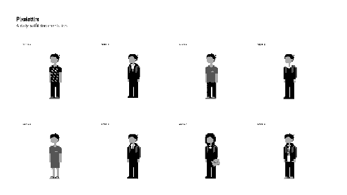

Pixelattire is a daily pixel art project where I document what I wear every day through pixel art self-portraits.
2018
Pixelattire started in 2018 where entries were created using GIMP and posted onto a Tumblr page.
2019
As of 2019, I've stopped manually creating entries and opted for a simple system that auto-generates pixel sprites from text logs.
DDMYY 00112233 1A1CD 52.1 50.1V 1.8D 0.3R